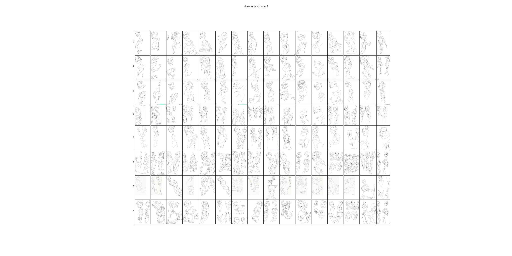
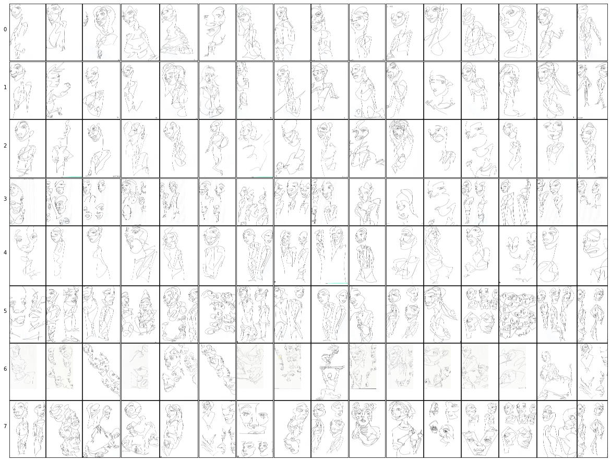
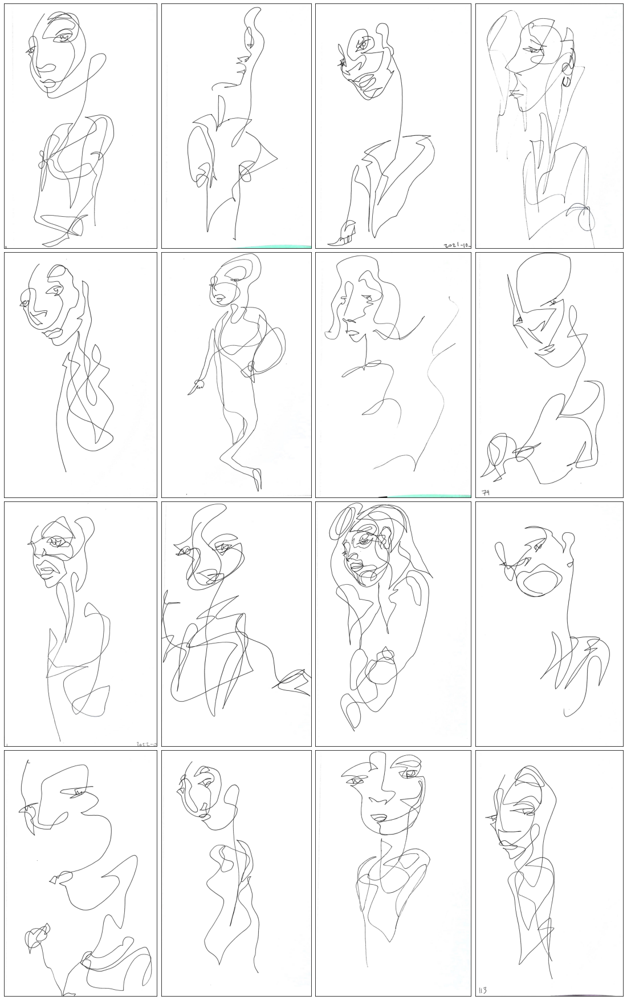
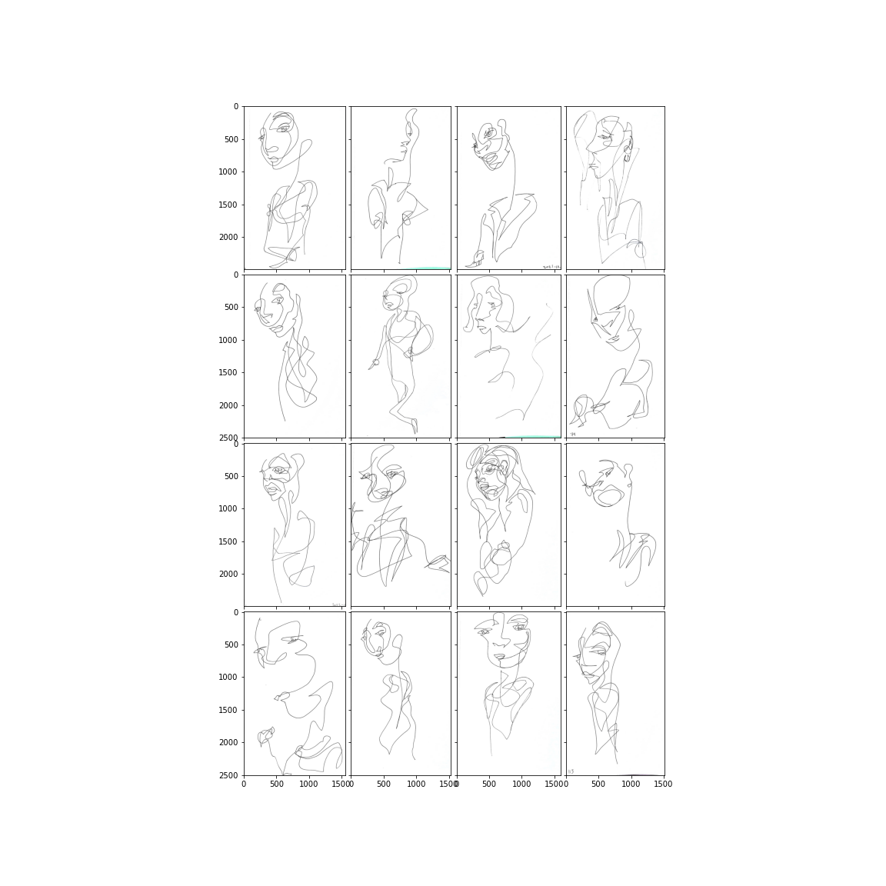

import io
import json
import math
import os
import numpy as np
import pandas as pd
from PIL import Image
#from fastai.vision.all import *
#from portfolio_search.embeddings import *
#from portfolio_search.fileorg import *e2e
Fill in a module description here
Loading TSV’s and Centroids
subclusters_dir = (
singleline_data_home() / "raster/epoch-20231214/04_SUBCLUSTERS"
)drawing_centroids_fname = f"{subclusters_dir}/centroids_drawings.json"
with open(drawing_centroids_fname, "r") as infile:
drawing_centroids = json.load(infile)watercolor_centroids_fname = f"{subclusters_dir}/centroids_watercolors.json"
with open(watercolor_centroids_fname, "r") as infile:
watercolor_centroids = json.load(infile)clustered_drawings_tsv_fname = f"{subclusters_dir}/clustered_drawings.tsv"
# drawings_df.to_csv(
# clustered_drawings_tsv_fname, index=True, index_label="idx", sep="\t", header=True
# )
clustered_drawings_df = pd.read_csv(
clustered_drawings_tsv_fname, delimiter="\t", index_col="idx"
)
clustered_drawings_df.head()| abs_fname | rel_fname | label | pred_label | pred_idx | pred_probs | emb_csv | cluster | cluster_dist | metacluster | ... | drawings_cluster48_id | drawings_cluster48_dist | drawings_cropped_cluster16_id | drawings_cropped_cluster16_dist | drawings_cropped_cluster32_id | drawings_cropped_cluster32_dist | drawings_cropped_cluster48_id | drawings_cropped_cluster48_dist | drawings_cropped_cluster64_id | drawings_cropped_cluster64_dist | |
|---|---|---|---|---|---|---|---|---|---|---|---|---|---|---|---|---|---|---|---|---|---|
| idx | |||||||||||||||||||||
| 0 | /Users/al/Dropbox/2-Areas/2-Sketchbooks/datase... | art/sb77p043.jpg | art | xtra | 4 | 0.168532,0.008473,0.008068,0.016940,0.797986 | -0.6198182,-0.5714155,-0.6871516,-0.6553513,-0... | 11 | 199.22961 | 1 | ... | 15 | 166.33705 | 15 | 265.844100 | 15 | 257.350560 | 15 | 268.67297 | 58 | 276.82034 |
| 1 | /Users/al/Dropbox/2-Areas/2-Sketchbooks/datase... | art/sb67p021.jpg | art | xtra | 4 | 0.170976,0.008673,0.008480,0.017028,0.794843 | 1.1073987,0.3512016,-0.73929733,-0.6553513,1.7... | 3 | 132.26111 | 0 | ... | 45 | 137.20117 | 14 | 121.146545 | 31 | 122.172424 | 31 | 116.40921 | 34 | 122.04242 |
| 2 | /Users/al/Dropbox/2-Areas/2-Sketchbooks/datase... | art/sb25p227.jpg | art | xtra | 4 | 0.158396,0.008277,0.007424,0.016584,0.809319 | 1.3776337,-0.5714155,-0.2587232,-0.6553513,1.3... | 8 | 188.58075 | 0 | ... | 8 | 148.63470 | 10 | 220.298950 | 1 | 217.335360 | 1 | 213.25168 | 1 | 191.67163 |
| 3 | /Users/al/Dropbox/2-Areas/2-Sketchbooks/datase... | art/sb48p057.jpg | art | xtra | 4 | 0.165322,0.008453,0.008010,0.016587,0.801628 | 2.4936543,0.17563903,-0.6522293,-0.55642915,1.... | 14 | 90.26291 | 0 | ... | 28 | 83.96362 | 2 | 144.254030 | 21 | 129.951970 | 21 | 140.07254 | 21 | 144.77570 |
| 4 | /Users/al/Dropbox/2-Areas/2-Sketchbooks/datase... | art/sb77p044.jpg | art | xtra | 4 | 0.171638,0.008182,0.008061,0.016469,0.795650 | 2.170152,-0.01916939,-0.47766963,-0.6553513,-0... | 4 | 176.29102 | 0 | ... | 39 | 169.47894 | 15 | 151.277310 | 15 | 141.268980 | 15 | 145.39337 | 58 | 151.13809 |
5 rows × 41 columns
clustered_watercolors_tsv_fname = f"{subclusters_dir}/clustered_watercolors.tsv"
# watercolors_df.to_csv(
# clustered_watercolors_tsv_fname,
# index=True,
# index_label="idx",
# sep="\t",
# header=True,
# )
clustered_watercolors_df = pd.read_csv(
clustered_watercolors_tsv_fname, delimiter="\t", index_col="idx"
)
clustered_watercolors_df.head()| abs_fname | rel_fname | label | pred_label | pred_idx | pred_probs | emb_csv | cluster | cluster_dist | metacluster | ... | handlabeled_metacluster_name | handlabeled_metacluster_id | handlabeled_metacluster_was_correct | preprocessed_abs_path | handlabeled_abs_path | emb_csv_cropped | watercolors_cluster_id | watercolors_cluster_dist | watercolors_cropped_cluster_id | watercolors_cropped_cluster_dist | |
|---|---|---|---|---|---|---|---|---|---|---|---|---|---|---|---|---|---|---|---|---|---|
| idx | |||||||||||||||||||||
| 0 | /Users/al/Dropbox/2-Areas/2-Sketchbooks/datase... | art/sb07p104.jpg | art | xtra | 4 | 0.177406,0.008799,0.008245,0.017177,0.788373 | -0.39105213,0.96309596,-0.73929733,0.4489988,0... | 5 | 238.33170 | 1 | ... | 1_watercolors | 1 | True | /Users/al/Dropbox/2-Areas/2-Sketchbooks/datase... | /Users/al/Dropbox/2-Areas/2-Sketchbooks/datase... | -0.6198182,0.8895926,-0.73929733,0.6418346,0.4... | 7 | 215.02927 | 7 | 206.64117 |
| 1 | /Users/al/Dropbox/2-Areas/2-Sketchbooks/datase... | art/sb31p017.jpg | art | xtra | 4 | 0.172119,0.008924,0.008226,0.016950,0.793781 | -0.05104202,-0.3935787,-0.73929733,0.86878717,... | 11 | 191.66959 | 1 | ... | 1_watercolors | 1 | True | /Users/al/Dropbox/2-Areas/2-Sketchbooks/datase... | /Users/al/Dropbox/2-Areas/2-Sketchbooks/datase... | 1.491735,-0.5714155,-0.73929733,0.05867392,0.5... | 4 | 199.03098 | 4 | 195.97546 |
| 2 | /Users/al/Dropbox/2-Areas/2-Sketchbooks/datase... | art/sb05p079.jpg | art | xtra | 4 | 0.172158,0.008873,0.008536,0.017017,0.793416 | 1.8089037,-0.5714155,-0.73929733,-0.10773122,-... | 11 | 140.32997 | 1 | ... | 1_watercolors | 1 | NaN | /Users/al/Dropbox/2-Areas/2-Sketchbooks/datase... | /Users/al/Dropbox/2-Areas/2-Sketchbooks/datase... | -0.6013173,-0.5714155,-0.7368871,-0.6553513,-0... | 4 | 142.76602 | 4 | 248.37231 |
| 3 | /Users/al/Dropbox/2-Areas/2-Sketchbooks/datase... | art/sb26p082.jpg | art | xtra | 4 | 0.179525,0.008828,0.008282,0.017196,0.786169 | 1.8392665,0.3796271,-0.73929733,0.82189727,1.6... | 7 | 176.11029 | 1 | ... | 1_watercolors | 1 | NaN | /Users/al/Dropbox/2-Areas/2-Sketchbooks/datase... | /Users/al/Dropbox/2-Areas/2-Sketchbooks/datase... | 0.8175719,0.48385304,-0.73929733,1.0291914,1.4... | 1 | 157.93832 | 1 | 196.84943 |
| 4 | /Users/al/Dropbox/2-Areas/2-Sketchbooks/datase... | art/sb69p101-color.jpg | art | xtra | 4 | 0.179525,0.008828,0.008282,0.017196,0.786169 | -0.23259398,-0.5714155,-0.73929733,-0.6553513,... | 7 | 187.45346 | 1 | ... | 1_watercolors | 1 | NaN | /Users/al/Dropbox/2-Areas/2-Sketchbooks/datase... | /Users/al/Dropbox/2-Areas/2-Sketchbooks/datase... | 0.14908737,-0.5714155,-0.73929733,0.44245207,-... | 1 | 167.27823 | 1 | 136.63800 |
5 rows × 25 columns
viz functions
import matplotlib.pyplot as plt
from mpl_toolkits.axes_grid1 import ImageGrid
def show_all_clusters(
clusters_df, clusters, cluster_idxs=None, title=None, fname=None, size_factor=1.0
):
select_idxs = cluster_idxs if cluster_idxs else range(len(clusters))
num_clusters = len(select_idxs)
examples_per_cluster = 16
fig = plt.figure(
figsize=(examples_per_cluster * size_factor, num_clusters * size_factor)
)
# hide borders
fig.patch.set_visible(False)
grid = ImageGrid(
fig,
111, # similar to subplot(111)
nrows_ncols=(num_clusters, examples_per_cluster),
axes_pad=0.02,
)
for row, cluster_idx in enumerate(select_idxs):
print(f"cluster_idx = {cluster_idx}, clusters = {clusters[cluster_idx]}")
imgs = [
Image.open(clusters_df.iloc[i].preprocessed_abs_path)
for i in clusters[cluster_idx]
]
for col, im in enumerate(imgs):
total_idx = col + row * examples_per_cluster
ax = grid[total_idx]
ax.grid = False
ax.set_xticks([])
ax.set_yticks([])
if col == 0:
ax.set_ylabel(f"{cluster_idx} ", rotation=0)
ax.imshow(im)
if title:
fig.suptitle(
title
if cluster_idxs is None
else f"{title} (Cluster IDs: {','.join([str(i) for i in select_idxs])})"
)
if not fname:
plt.show()
else:
with io.BytesIO() as buf:
plt.savefig(buf, format="png")
plt.close()
img = Image.open(buf)
img.save(fname)
buf.seek(0)
buf.truncate()
def show_cluster(clusters_df, clusters, idx, fname=None, title=None, size_factor=1.0):
imgs = [
Image.open(clusters_df.iloc[i].preprocessed_abs_path) for i in clusters[idx]
]
fig = plt.figure(figsize=(16.0 * size_factor, 16.0 * size_factor))
if title:
fig.suptitle(title)
# hide borders
fig.patch.set_visible(False)
grid = ImageGrid(
fig,
111, # similar to subplot(111)
nrows_ncols=(4, 4), # creates 2x2 grid of axes
axes_pad=0.1, # pad between axes in inch.
)
for ax, im in zip(grid, imgs):
# Iterating over the grid returns the Axes.
ax.imshow(im)
ax.grid = False
ax.set_xticks([])
ax.set_yticks([])
if not fname:
plt.show()
else:
with io.BytesIO() as buf:
plt.savefig(buf, format="png")
plt.close()
img = Image.open(buf)
img.save(fname)
buf.seek(0)
buf.truncate()verify viz functions
# inspect shape of cluster centroid data
for emb_type, cluster_colnames in drawing_centroids.items():
print(emb_type)
for cluster_col, saved_data in cluster_colnames.items():
D, I = saved_data
print("\t" + cluster_col)drawings_emdb
drawings_cluster8
drawings_cluster16
drawings_cluster32
drawings_cluster48
drawings_cluster64
drawings_cropped_emdb
drawings_cropped_cluster8
drawings_cropped_cluster16
drawings_cropped_cluster32
drawings_cropped_cluster48
drawings_cropped_cluster64cluster_col = "drawings_cluster8"
D, I = drawing_centroids["drawings_emdb"][cluster_col]
show_all_clusters(
clusters_df=clustered_drawings_df,
clusters=I,
# title=cluster_col, ## skip title, so the layout uses the full space
size_factor=2.0,
fname=f"{subclusters_dir}/{cluster_col}.png",
)cluster_idx = 0, clusters = [271, 814, 1682, 932, 600, 391, 1058, 878, 368, 149, 1442, 364, 1858, 1037, 1382, 945]
cluster_idx = 1, clusters = [542, 1292, 1634, 1274, 704, 19, 80, 919, 1244, 609, 771, 129, 334, 1102, 1364, 1553]
cluster_idx = 2, clusters = [274, 1408, 268, 521, 20, 913, 345, 1257, 523, 286, 190, 1401, 1021, 636, 1139, 1095]
cluster_idx = 3, clusters = [653, 1733, 1591, 300, 1397, 905, 808, 912, 1641, 749, 249, 1021, 1576, 900, 48, 1882]
cluster_idx = 4, clusters = [1727, 1805, 714, 1204, 848, 258, 562, 309, 172, 687, 3, 763, 92, 1898, 277, 1423]
cluster_idx = 5, clusters = [1607, 649, 597, 1072, 1316, 266, 573, 999, 562, 956, 918, 1364, 927, 896, 1129, 678]
cluster_idx = 6, clusters = [305, 1517, 319, 16, 394, 1769, 308, 1673, 1418, 1637, 489, 1891, 909, 1827, 583, 1047]
cluster_idx = 7, clusters = [1716, 1381, 370, 842, 530, 1047, 1809, 989, 918, 76, 1332, 871, 346, 927, 257, 678]Image.open(f"{subclusters_dir}/{cluster_col}.png")
show_all_clusters(
clusters_df=clustered_drawings_df,
clusters=I,
# title=cluster_col,
size_factor=2.0,
# fname=f"{subclusters_dir}/{cluster_col}.png",
)cluster_idx = 0, clusters = [271, 814, 1682, 932, 600, 391, 1058, 878, 368, 149, 1442, 364, 1858, 1037, 1382, 945]
cluster_idx = 1, clusters = [542, 1292, 1634, 1274, 704, 19, 80, 919, 1244, 609, 771, 129, 334, 1102, 1364, 1553]
cluster_idx = 2, clusters = [274, 1408, 268, 521, 20, 913, 345, 1257, 523, 286, 190, 1401, 1021, 636, 1139, 1095]
cluster_idx = 3, clusters = [653, 1733, 1591, 300, 1397, 905, 808, 912, 1641, 749, 249, 1021, 1576, 900, 48, 1882]
cluster_idx = 4, clusters = [1727, 1805, 714, 1204, 848, 258, 562, 309, 172, 687, 3, 763, 92, 1898, 277, 1423]
cluster_idx = 5, clusters = [1607, 649, 597, 1072, 1316, 266, 573, 999, 562, 956, 918, 1364, 927, 896, 1129, 678]
cluster_idx = 6, clusters = [305, 1517, 319, 16, 394, 1769, 308, 1673, 1418, 1637, 489, 1891, 909, 1827, 583, 1047]
cluster_idx = 7, clusters = [1716, 1381, 370, 842, 530, 1047, 1809, 989, 918, 76, 1332, 871, 346, 927, 257, 678]
cid = 2
show_cluster(
clusters_df=clustered_drawings_df,
clusters=I,
idx=cid,
size_factor=2.0,
# fname=f"{subclusters_dir}/{cluster_col}__{cid:02d}.png",
)
# Image.open(f"{subclusters_dir}/{cluster_col}__{cid:02d}.png")
Save summary images (all clusters and per-cluster)
# inspect shape of cluster centroid data
for emb_type, cluster_colnames in drawing_centroids.items():
print(emb_type)
for cluster_col, saved_data in cluster_colnames.items():
D, I = saved_data
print("\t" + cluster_col)
overview_fname = f"{subclusters_dir}/{cluster_col}.png"
if not os.path.exists(overview_fname):
show_all_clusters(
clusters_df=clustered_drawings_df,
clusters=I,
size_factor=2.0,
fname=overview_fname,
)
print(f"\tsaved {overview_fname}")
else:
print(f"\t(exists) {overview_fname}")
for cid in range(len(I)):
print(f"\t\tsubcluster {cid}")
cid_fname = f"{subclusters_dir}/{cluster_col}__{cid:02d}.png"
if not os.path.exists(cid_fname):
show_cluster(
clusters_df=clustered_drawings_df,
clusters=I,
idx=cid,
size_factor=2.0,
fname=cid_fname,
)
print(f"\t\tsaved {cid_fname}")
else:
print(f"\t\t(exists) {cid_fname}")drawings_emdb
drawings_cluster8
(exists) /Users/al/Dropbox/2-Areas/2-Sketchbooks/datasets/full-v2/04_SUBCLUSTERS/drawings_cluster8.png
subcluster 0
(exists) /Users/al/Dropbox/2-Areas/2-Sketchbooks/datasets/full-v2/04_SUBCLUSTERS/drawings_cluster8__00.png
subcluster 1
(exists) /Users/al/Dropbox/2-Areas/2-Sketchbooks/datasets/full-v2/04_SUBCLUSTERS/drawings_cluster8__01.png
subcluster 2
(exists) /Users/al/Dropbox/2-Areas/2-Sketchbooks/datasets/full-v2/04_SUBCLUSTERS/drawings_cluster8__02.png
subcluster 3
(exists) /Users/al/Dropbox/2-Areas/2-Sketchbooks/datasets/full-v2/04_SUBCLUSTERS/drawings_cluster8__03.png
subcluster 4
(exists) /Users/al/Dropbox/2-Areas/2-Sketchbooks/datasets/full-v2/04_SUBCLUSTERS/drawings_cluster8__04.png
subcluster 5
(exists) /Users/al/Dropbox/2-Areas/2-Sketchbooks/datasets/full-v2/04_SUBCLUSTERS/drawings_cluster8__05.png
subcluster 6
(exists) /Users/al/Dropbox/2-Areas/2-Sketchbooks/datasets/full-v2/04_SUBCLUSTERS/drawings_cluster8__06.png
subcluster 7
(exists) /Users/al/Dropbox/2-Areas/2-Sketchbooks/datasets/full-v2/04_SUBCLUSTERS/drawings_cluster8__07.png
drawings_cluster16
(exists) /Users/al/Dropbox/2-Areas/2-Sketchbooks/datasets/full-v2/04_SUBCLUSTERS/drawings_cluster16.png
subcluster 0
(exists) /Users/al/Dropbox/2-Areas/2-Sketchbooks/datasets/full-v2/04_SUBCLUSTERS/drawings_cluster16__00.png
subcluster 1
(exists) /Users/al/Dropbox/2-Areas/2-Sketchbooks/datasets/full-v2/04_SUBCLUSTERS/drawings_cluster16__01.png
subcluster 2
(exists) /Users/al/Dropbox/2-Areas/2-Sketchbooks/datasets/full-v2/04_SUBCLUSTERS/drawings_cluster16__02.png
subcluster 3
(exists) /Users/al/Dropbox/2-Areas/2-Sketchbooks/datasets/full-v2/04_SUBCLUSTERS/drawings_cluster16__03.png
subcluster 4
(exists) /Users/al/Dropbox/2-Areas/2-Sketchbooks/datasets/full-v2/04_SUBCLUSTERS/drawings_cluster16__04.png
subcluster 5
(exists) /Users/al/Dropbox/2-Areas/2-Sketchbooks/datasets/full-v2/04_SUBCLUSTERS/drawings_cluster16__05.png
subcluster 6
(exists) /Users/al/Dropbox/2-Areas/2-Sketchbooks/datasets/full-v2/04_SUBCLUSTERS/drawings_cluster16__06.png
subcluster 7
(exists) /Users/al/Dropbox/2-Areas/2-Sketchbooks/datasets/full-v2/04_SUBCLUSTERS/drawings_cluster16__07.png
subcluster 8
(exists) /Users/al/Dropbox/2-Areas/2-Sketchbooks/datasets/full-v2/04_SUBCLUSTERS/drawings_cluster16__08.png
subcluster 9
(exists) /Users/al/Dropbox/2-Areas/2-Sketchbooks/datasets/full-v2/04_SUBCLUSTERS/drawings_cluster16__09.png
subcluster 10
(exists) /Users/al/Dropbox/2-Areas/2-Sketchbooks/datasets/full-v2/04_SUBCLUSTERS/drawings_cluster16__10.png
subcluster 11
(exists) /Users/al/Dropbox/2-Areas/2-Sketchbooks/datasets/full-v2/04_SUBCLUSTERS/drawings_cluster16__11.png
subcluster 12
(exists) /Users/al/Dropbox/2-Areas/2-Sketchbooks/datasets/full-v2/04_SUBCLUSTERS/drawings_cluster16__12.png
subcluster 13
(exists) /Users/al/Dropbox/2-Areas/2-Sketchbooks/datasets/full-v2/04_SUBCLUSTERS/drawings_cluster16__13.png
subcluster 14
(exists) /Users/al/Dropbox/2-Areas/2-Sketchbooks/datasets/full-v2/04_SUBCLUSTERS/drawings_cluster16__14.png
subcluster 15
(exists) /Users/al/Dropbox/2-Areas/2-Sketchbooks/datasets/full-v2/04_SUBCLUSTERS/drawings_cluster16__15.png
drawings_cluster32
(exists) /Users/al/Dropbox/2-Areas/2-Sketchbooks/datasets/full-v2/04_SUBCLUSTERS/drawings_cluster32.png
subcluster 0
(exists) /Users/al/Dropbox/2-Areas/2-Sketchbooks/datasets/full-v2/04_SUBCLUSTERS/drawings_cluster32__00.png
subcluster 1
(exists) /Users/al/Dropbox/2-Areas/2-Sketchbooks/datasets/full-v2/04_SUBCLUSTERS/drawings_cluster32__01.png
subcluster 2
(exists) /Users/al/Dropbox/2-Areas/2-Sketchbooks/datasets/full-v2/04_SUBCLUSTERS/drawings_cluster32__02.png
subcluster 3
(exists) /Users/al/Dropbox/2-Areas/2-Sketchbooks/datasets/full-v2/04_SUBCLUSTERS/drawings_cluster32__03.png
subcluster 4
(exists) /Users/al/Dropbox/2-Areas/2-Sketchbooks/datasets/full-v2/04_SUBCLUSTERS/drawings_cluster32__04.png
subcluster 5
(exists) /Users/al/Dropbox/2-Areas/2-Sketchbooks/datasets/full-v2/04_SUBCLUSTERS/drawings_cluster32__05.png
subcluster 6
(exists) /Users/al/Dropbox/2-Areas/2-Sketchbooks/datasets/full-v2/04_SUBCLUSTERS/drawings_cluster32__06.png
subcluster 7
(exists) /Users/al/Dropbox/2-Areas/2-Sketchbooks/datasets/full-v2/04_SUBCLUSTERS/drawings_cluster32__07.png
subcluster 8
(exists) /Users/al/Dropbox/2-Areas/2-Sketchbooks/datasets/full-v2/04_SUBCLUSTERS/drawings_cluster32__08.png
subcluster 9
(exists) /Users/al/Dropbox/2-Areas/2-Sketchbooks/datasets/full-v2/04_SUBCLUSTERS/drawings_cluster32__09.png
subcluster 10
(exists) /Users/al/Dropbox/2-Areas/2-Sketchbooks/datasets/full-v2/04_SUBCLUSTERS/drawings_cluster32__10.png
subcluster 11
(exists) /Users/al/Dropbox/2-Areas/2-Sketchbooks/datasets/full-v2/04_SUBCLUSTERS/drawings_cluster32__11.png
subcluster 12
(exists) /Users/al/Dropbox/2-Areas/2-Sketchbooks/datasets/full-v2/04_SUBCLUSTERS/drawings_cluster32__12.png
subcluster 13
(exists) /Users/al/Dropbox/2-Areas/2-Sketchbooks/datasets/full-v2/04_SUBCLUSTERS/drawings_cluster32__13.png
subcluster 14
(exists) /Users/al/Dropbox/2-Areas/2-Sketchbooks/datasets/full-v2/04_SUBCLUSTERS/drawings_cluster32__14.png
subcluster 15
(exists) /Users/al/Dropbox/2-Areas/2-Sketchbooks/datasets/full-v2/04_SUBCLUSTERS/drawings_cluster32__15.png
subcluster 16
(exists) /Users/al/Dropbox/2-Areas/2-Sketchbooks/datasets/full-v2/04_SUBCLUSTERS/drawings_cluster32__16.png
subcluster 17
(exists) /Users/al/Dropbox/2-Areas/2-Sketchbooks/datasets/full-v2/04_SUBCLUSTERS/drawings_cluster32__17.png
subcluster 18
(exists) /Users/al/Dropbox/2-Areas/2-Sketchbooks/datasets/full-v2/04_SUBCLUSTERS/drawings_cluster32__18.png
subcluster 19
(exists) /Users/al/Dropbox/2-Areas/2-Sketchbooks/datasets/full-v2/04_SUBCLUSTERS/drawings_cluster32__19.png
subcluster 20
(exists) /Users/al/Dropbox/2-Areas/2-Sketchbooks/datasets/full-v2/04_SUBCLUSTERS/drawings_cluster32__20.png
subcluster 21
(exists) /Users/al/Dropbox/2-Areas/2-Sketchbooks/datasets/full-v2/04_SUBCLUSTERS/drawings_cluster32__21.png
subcluster 22
(exists) /Users/al/Dropbox/2-Areas/2-Sketchbooks/datasets/full-v2/04_SUBCLUSTERS/drawings_cluster32__22.png
subcluster 23
(exists) /Users/al/Dropbox/2-Areas/2-Sketchbooks/datasets/full-v2/04_SUBCLUSTERS/drawings_cluster32__23.png
subcluster 24
(exists) /Users/al/Dropbox/2-Areas/2-Sketchbooks/datasets/full-v2/04_SUBCLUSTERS/drawings_cluster32__24.png
subcluster 25
(exists) /Users/al/Dropbox/2-Areas/2-Sketchbooks/datasets/full-v2/04_SUBCLUSTERS/drawings_cluster32__25.png
subcluster 26
(exists) /Users/al/Dropbox/2-Areas/2-Sketchbooks/datasets/full-v2/04_SUBCLUSTERS/drawings_cluster32__26.png
subcluster 27
(exists) /Users/al/Dropbox/2-Areas/2-Sketchbooks/datasets/full-v2/04_SUBCLUSTERS/drawings_cluster32__27.png
subcluster 28
(exists) /Users/al/Dropbox/2-Areas/2-Sketchbooks/datasets/full-v2/04_SUBCLUSTERS/drawings_cluster32__28.png
subcluster 29
(exists) /Users/al/Dropbox/2-Areas/2-Sketchbooks/datasets/full-v2/04_SUBCLUSTERS/drawings_cluster32__29.png
subcluster 30
(exists) /Users/al/Dropbox/2-Areas/2-Sketchbooks/datasets/full-v2/04_SUBCLUSTERS/drawings_cluster32__30.png
subcluster 31
(exists) /Users/al/Dropbox/2-Areas/2-Sketchbooks/datasets/full-v2/04_SUBCLUSTERS/drawings_cluster32__31.png
drawings_cluster48
(exists) /Users/al/Dropbox/2-Areas/2-Sketchbooks/datasets/full-v2/04_SUBCLUSTERS/drawings_cluster48.png
subcluster 0
(exists) /Users/al/Dropbox/2-Areas/2-Sketchbooks/datasets/full-v2/04_SUBCLUSTERS/drawings_cluster48__00.png
subcluster 1
(exists) /Users/al/Dropbox/2-Areas/2-Sketchbooks/datasets/full-v2/04_SUBCLUSTERS/drawings_cluster48__01.png
subcluster 2
(exists) /Users/al/Dropbox/2-Areas/2-Sketchbooks/datasets/full-v2/04_SUBCLUSTERS/drawings_cluster48__02.png
subcluster 3
(exists) /Users/al/Dropbox/2-Areas/2-Sketchbooks/datasets/full-v2/04_SUBCLUSTERS/drawings_cluster48__03.png
subcluster 4
(exists) /Users/al/Dropbox/2-Areas/2-Sketchbooks/datasets/full-v2/04_SUBCLUSTERS/drawings_cluster48__04.png
subcluster 5
(exists) /Users/al/Dropbox/2-Areas/2-Sketchbooks/datasets/full-v2/04_SUBCLUSTERS/drawings_cluster48__05.png
subcluster 6
(exists) /Users/al/Dropbox/2-Areas/2-Sketchbooks/datasets/full-v2/04_SUBCLUSTERS/drawings_cluster48__06.png
subcluster 7
(exists) /Users/al/Dropbox/2-Areas/2-Sketchbooks/datasets/full-v2/04_SUBCLUSTERS/drawings_cluster48__07.png
subcluster 8
(exists) /Users/al/Dropbox/2-Areas/2-Sketchbooks/datasets/full-v2/04_SUBCLUSTERS/drawings_cluster48__08.png
subcluster 9
(exists) /Users/al/Dropbox/2-Areas/2-Sketchbooks/datasets/full-v2/04_SUBCLUSTERS/drawings_cluster48__09.png
subcluster 10
(exists) /Users/al/Dropbox/2-Areas/2-Sketchbooks/datasets/full-v2/04_SUBCLUSTERS/drawings_cluster48__10.png
subcluster 11
(exists) /Users/al/Dropbox/2-Areas/2-Sketchbooks/datasets/full-v2/04_SUBCLUSTERS/drawings_cluster48__11.png
subcluster 12
(exists) /Users/al/Dropbox/2-Areas/2-Sketchbooks/datasets/full-v2/04_SUBCLUSTERS/drawings_cluster48__12.png
subcluster 13
(exists) /Users/al/Dropbox/2-Areas/2-Sketchbooks/datasets/full-v2/04_SUBCLUSTERS/drawings_cluster48__13.png
subcluster 14
(exists) /Users/al/Dropbox/2-Areas/2-Sketchbooks/datasets/full-v2/04_SUBCLUSTERS/drawings_cluster48__14.png
subcluster 15
(exists) /Users/al/Dropbox/2-Areas/2-Sketchbooks/datasets/full-v2/04_SUBCLUSTERS/drawings_cluster48__15.png
subcluster 16
(exists) /Users/al/Dropbox/2-Areas/2-Sketchbooks/datasets/full-v2/04_SUBCLUSTERS/drawings_cluster48__16.png
subcluster 17
(exists) /Users/al/Dropbox/2-Areas/2-Sketchbooks/datasets/full-v2/04_SUBCLUSTERS/drawings_cluster48__17.png
subcluster 18
(exists) /Users/al/Dropbox/2-Areas/2-Sketchbooks/datasets/full-v2/04_SUBCLUSTERS/drawings_cluster48__18.png
subcluster 19
(exists) /Users/al/Dropbox/2-Areas/2-Sketchbooks/datasets/full-v2/04_SUBCLUSTERS/drawings_cluster48__19.png
subcluster 20
(exists) /Users/al/Dropbox/2-Areas/2-Sketchbooks/datasets/full-v2/04_SUBCLUSTERS/drawings_cluster48__20.png
subcluster 21
(exists) /Users/al/Dropbox/2-Areas/2-Sketchbooks/datasets/full-v2/04_SUBCLUSTERS/drawings_cluster48__21.png
subcluster 22
(exists) /Users/al/Dropbox/2-Areas/2-Sketchbooks/datasets/full-v2/04_SUBCLUSTERS/drawings_cluster48__22.png
subcluster 23
(exists) /Users/al/Dropbox/2-Areas/2-Sketchbooks/datasets/full-v2/04_SUBCLUSTERS/drawings_cluster48__23.png
subcluster 24
(exists) /Users/al/Dropbox/2-Areas/2-Sketchbooks/datasets/full-v2/04_SUBCLUSTERS/drawings_cluster48__24.png
subcluster 25
(exists) /Users/al/Dropbox/2-Areas/2-Sketchbooks/datasets/full-v2/04_SUBCLUSTERS/drawings_cluster48__25.png
subcluster 26
(exists) /Users/al/Dropbox/2-Areas/2-Sketchbooks/datasets/full-v2/04_SUBCLUSTERS/drawings_cluster48__26.png
subcluster 27
(exists) /Users/al/Dropbox/2-Areas/2-Sketchbooks/datasets/full-v2/04_SUBCLUSTERS/drawings_cluster48__27.png
subcluster 28
(exists) /Users/al/Dropbox/2-Areas/2-Sketchbooks/datasets/full-v2/04_SUBCLUSTERS/drawings_cluster48__28.png
subcluster 29
(exists) /Users/al/Dropbox/2-Areas/2-Sketchbooks/datasets/full-v2/04_SUBCLUSTERS/drawings_cluster48__29.png
subcluster 30
(exists) /Users/al/Dropbox/2-Areas/2-Sketchbooks/datasets/full-v2/04_SUBCLUSTERS/drawings_cluster48__30.png
subcluster 31
(exists) /Users/al/Dropbox/2-Areas/2-Sketchbooks/datasets/full-v2/04_SUBCLUSTERS/drawings_cluster48__31.png
subcluster 32
(exists) /Users/al/Dropbox/2-Areas/2-Sketchbooks/datasets/full-v2/04_SUBCLUSTERS/drawings_cluster48__32.png
subcluster 33
(exists) /Users/al/Dropbox/2-Areas/2-Sketchbooks/datasets/full-v2/04_SUBCLUSTERS/drawings_cluster48__33.png
subcluster 34
(exists) /Users/al/Dropbox/2-Areas/2-Sketchbooks/datasets/full-v2/04_SUBCLUSTERS/drawings_cluster48__34.png
subcluster 35
(exists) /Users/al/Dropbox/2-Areas/2-Sketchbooks/datasets/full-v2/04_SUBCLUSTERS/drawings_cluster48__35.png
subcluster 36
(exists) /Users/al/Dropbox/2-Areas/2-Sketchbooks/datasets/full-v2/04_SUBCLUSTERS/drawings_cluster48__36.png
subcluster 37
(exists) /Users/al/Dropbox/2-Areas/2-Sketchbooks/datasets/full-v2/04_SUBCLUSTERS/drawings_cluster48__37.png
subcluster 38
(exists) /Users/al/Dropbox/2-Areas/2-Sketchbooks/datasets/full-v2/04_SUBCLUSTERS/drawings_cluster48__38.png
subcluster 39
(exists) /Users/al/Dropbox/2-Areas/2-Sketchbooks/datasets/full-v2/04_SUBCLUSTERS/drawings_cluster48__39.png
subcluster 40
(exists) /Users/al/Dropbox/2-Areas/2-Sketchbooks/datasets/full-v2/04_SUBCLUSTERS/drawings_cluster48__40.png
subcluster 41
(exists) /Users/al/Dropbox/2-Areas/2-Sketchbooks/datasets/full-v2/04_SUBCLUSTERS/drawings_cluster48__41.png
subcluster 42
(exists) /Users/al/Dropbox/2-Areas/2-Sketchbooks/datasets/full-v2/04_SUBCLUSTERS/drawings_cluster48__42.png
subcluster 43
(exists) /Users/al/Dropbox/2-Areas/2-Sketchbooks/datasets/full-v2/04_SUBCLUSTERS/drawings_cluster48__43.png
subcluster 44
(exists) /Users/al/Dropbox/2-Areas/2-Sketchbooks/datasets/full-v2/04_SUBCLUSTERS/drawings_cluster48__44.png
subcluster 45
(exists) /Users/al/Dropbox/2-Areas/2-Sketchbooks/datasets/full-v2/04_SUBCLUSTERS/drawings_cluster48__45.png
subcluster 46
(exists) /Users/al/Dropbox/2-Areas/2-Sketchbooks/datasets/full-v2/04_SUBCLUSTERS/drawings_cluster48__46.png
subcluster 47
(exists) /Users/al/Dropbox/2-Areas/2-Sketchbooks/datasets/full-v2/04_SUBCLUSTERS/drawings_cluster48__47.png
drawings_cluster64# for cid in range(len(I)):
# show_cluster(
# clusters_df=clustered_drawings_df,
# clusters=I,
# idx=cid,
# fname=f"{subclusters_dir}/{cluster_col}__{cid:02d}.png",
# )8# clustered_drawings_df.iloc[2].preprocessed_abs_path'/Users/al/Dropbox/2-Areas/2-Sketchbooks/datasets/full-v2/10_SIMPLE_CROP/0_drawings/sb25p227.jpg'